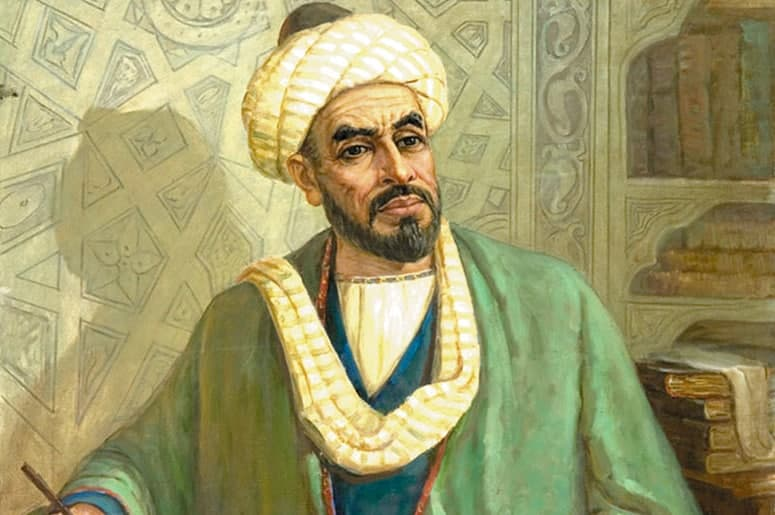
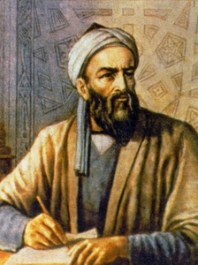
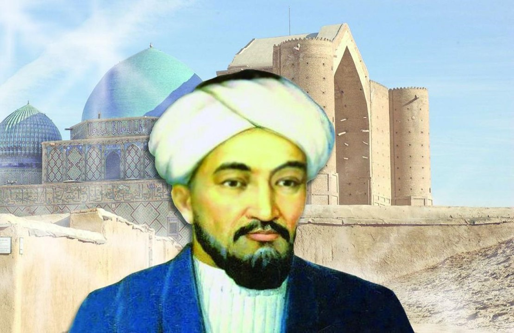

Bugungi kunda mamlakatimizda 2017 — 2021 yillarda O‘zbekiston Respublikasini rivojlantirishning beshta ustuvor yo‘nalishi bo‘yicha Harakatlar strategiyasi asosida barcha soha va tarmoqlarda ulkan o‘zgarishlar amalga oshirilmoqda. Bu borada jamiyat hayotida ezgu qadriyat va an’analarni chuqur qaror toptirishga, xususan, xalqimiz, ayniqsa, yosh avlodning ma’naviy-intellektual salohiyati, ongu tafakkuri va dunyoqarashini yuksaltirish, ularning qalbida ona-Vatanimiz hamda xalqimizga muhabbat va sadoqat tuyg‘usini kuchaytirish, barkamol shaxsni tarbiyalashda beqiyos ahamiyatga ega bo‘lgan kitobxonlik madaniyatini oshirishga alohida e’tibor qaratilmoqda.
Ulug‘ ajdodlarimizning aql-zakovati va badiiy dahosi bilan yaratilgan noyob asarlar, xususan, matematika, mineralogiya, astronomiya, kimyo, tibbiyot, farmatsevtika, me’morlik, tarix, adabiyot, san’at, ilohiyot, falsafa va boshqa sohalarga oid manbalar nafaqat bizning xalqimiz, balki jahon ahlining bebaho boyligi hisoblanadi.
|  |
Abu Abdullo Muhammad Ibn Muso al - Xorazmiy. (783-850yy) Buyuk mutafakkir va olim al-Xorazmiyning arifmetika va algebraga doir «Kitob al-jabr val mukobala» (To’ldirish va qarama-qarshi qo’yish haqida kitob) asari matematika fanida yangi davrni boshlab beribgina qolmay, balki uning keyingi asrlardagi taraqqiyotiga ham katta asos bo’ldi. «Hind arifmetikasi haqida kitob» asari tufayli avval Sharq xalqlari, so’ngra esa Evropa xalqlari ham Qadimiy Hindistonning katta yutug’i-o’nli pozitsiyasi hisoblash sistemasi bilan tanishdilar. |
|---|---|
|  |
Abu Rayxon Beruniy (973-1048 yy). Xorazmda tavallud topgan bu mutafakkir, serqirra olim astronomiya, tarix, tibbiyot, riyoziyot, jug’rofiya, geodeziya, meteorologiya, etnografiya, falsafa, filologiyaga oid 150 ga yaqin asarlar yaratgan. Bu asarlar Beruniy nomini jahonga taratdi. Shuningdek, uning xikoyalar, she’rlar bitganligi xam ma’lum. Beruniy o’rta asrda birinchi bo’lib globus yaratdi. U arab, fors, hind turkiy tillarni mukammal bilgan. Uning «Farmokanaziya», «Geodeziya», «Hindiston», «Minerologiya», «Ma’sud qonuni», «qadimgi xalqlardan qolgan yodgorliklar» asarlari o’zbek va rus tillariga tarjima qilingan. Maxmud G’aznaviy saroyda ham xizmatda bo’lgan. U Ibn Sino bilan ham zamondosh edi. |
|  |
Abu Nasr al-Forobiy (873-950 yy). O’trorda tug’ilgan, boshlangich ma’lumotni Shosh, Buxoro, Samarqandda olgan so’ng Bag’dodda uzoq yashab, zamonasining olimlari bilan ilmiy muloqotda bo’lgan. Ilmning turli sohalariga oid 160 dan ortiq risolalar yozgan. Musiqa nazariyasiga bag’ishlangan «Musiqa xaqida katta kitob» nomli mashhur asari bu soha tarixiga bag’ishlangan eng dastlabki tarixiy manbalardan biridir. U serqirra, qomusiy olimdir. |